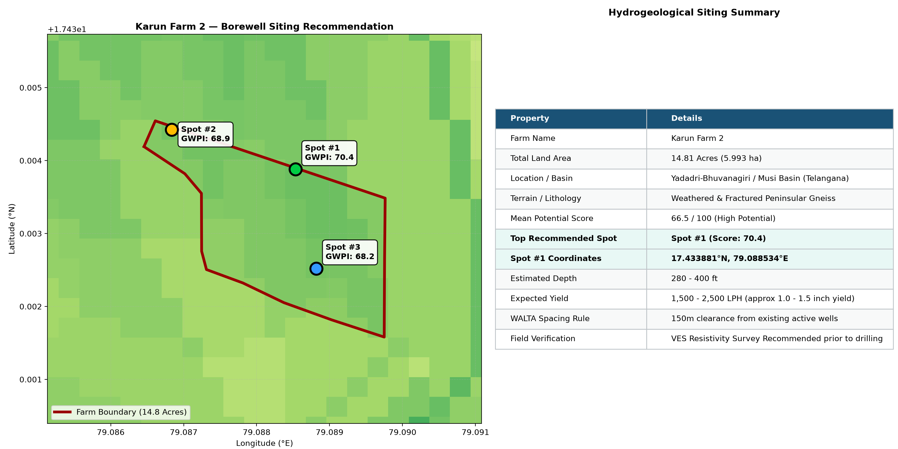

GeoAI Groundwater Prospecting (Musi Basin)
Official Hydrogeological Siting Document & Drilling Rig Operator Protocol

| Rank & Priority | Coordinates (Lat, Lon) | GWPI Score | Est. Drilling Depth | Expected Water Yield | Terrain / Slope |
|---|
BSMA Enterprises — Applied GeoAI Division
Scientific Groundwater Prospecting & Hydrogeological Siting
Ground-Truth Outcome Feedback for GeoAI Model Retraining